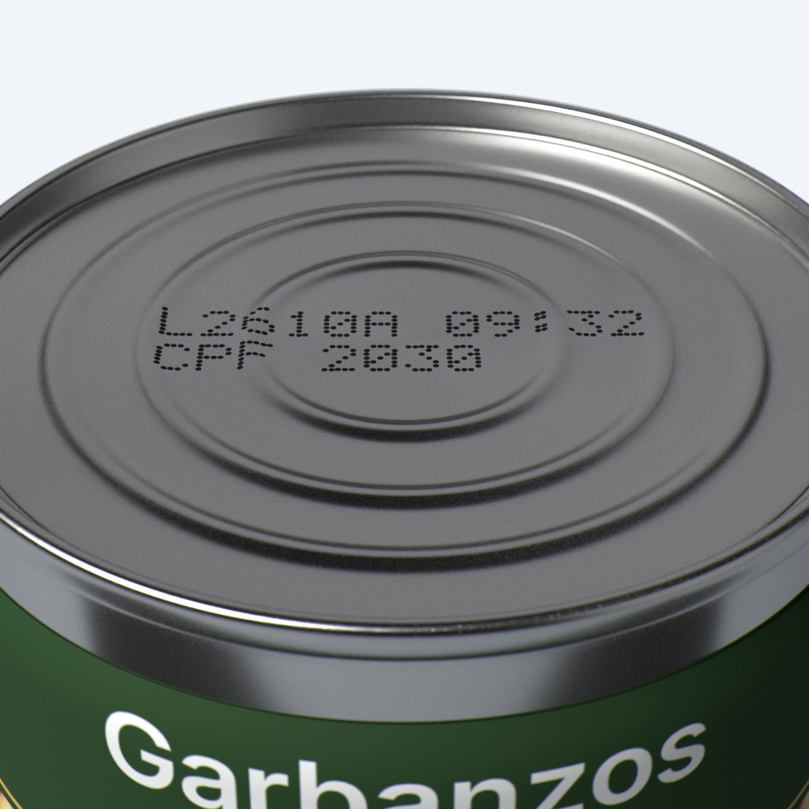
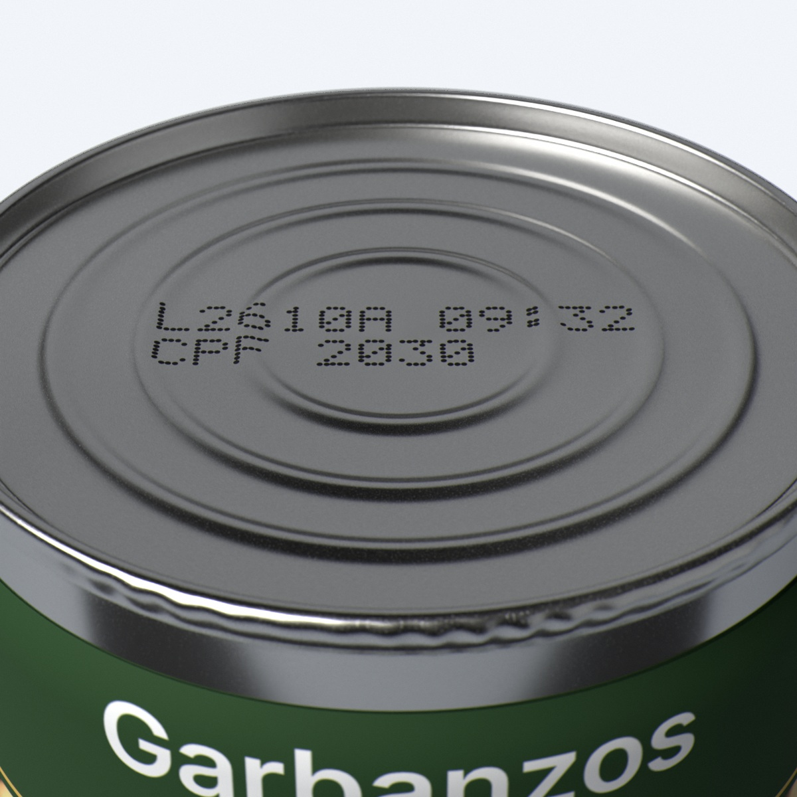
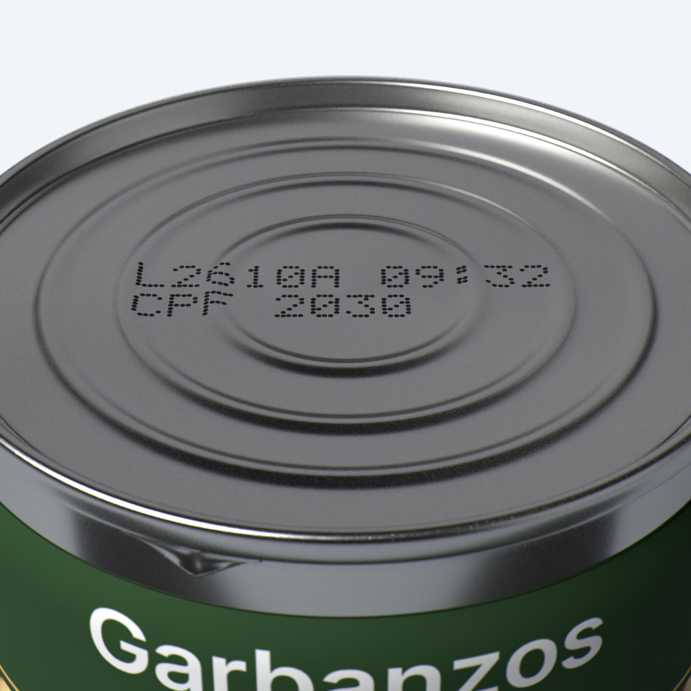
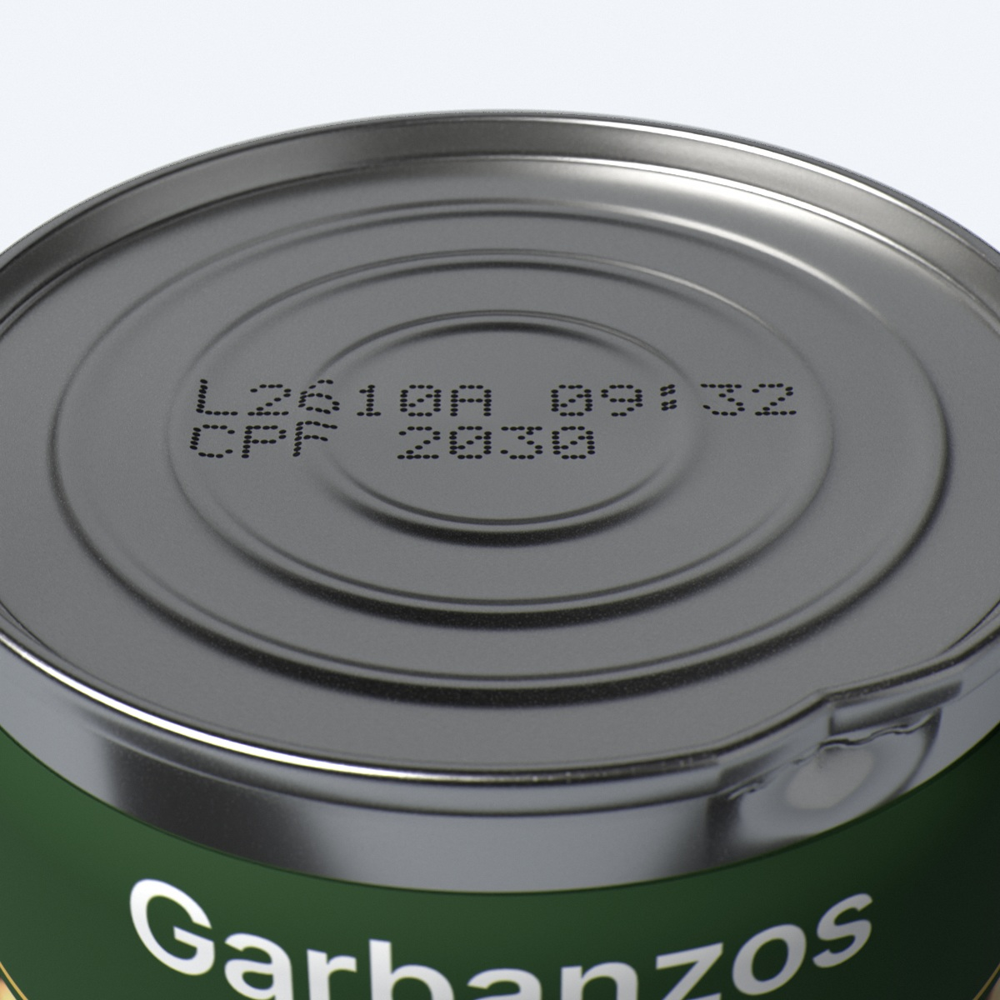
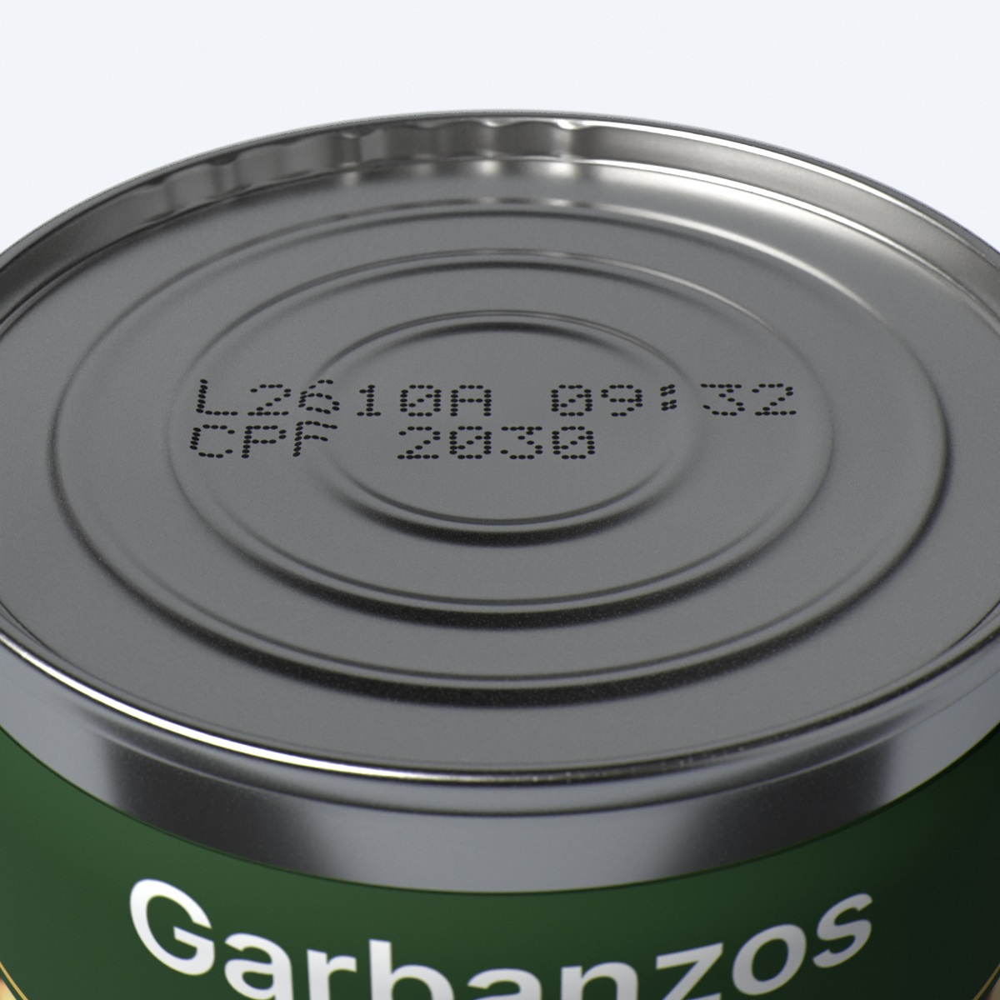
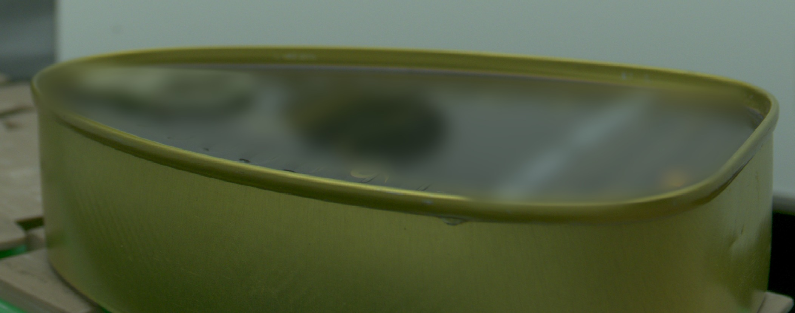
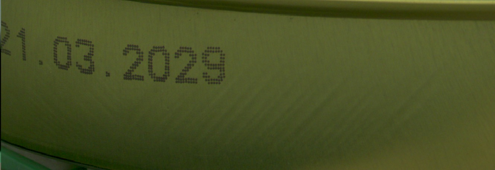

Qué inspecciona
Cada envase, en todo su perímetro
Defectos y abolladuras en el metal o el doble cierre, litografía impresa, etiquetas y marcajes de lote, caducidad y código de barras.
Doble cierre

Cierre correcto
La referencia que aprende el sistema.
Falso cierre

Fallo de la segunda carretilla

Pico

Fallo de pestaña inferior

Fallo del plato mandril
Metal, impresión y marcaje

Abolladuras y defectos del metal

Lectura de lotes y caducidades